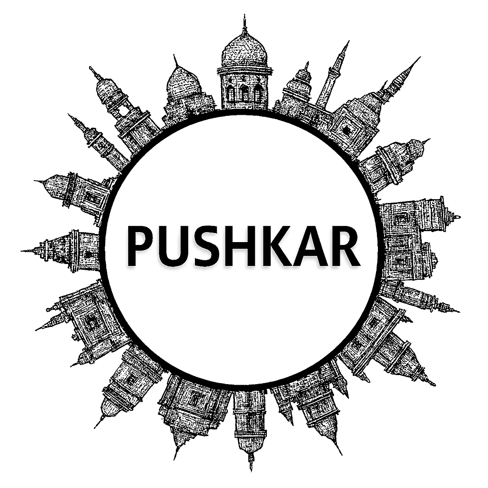

Pushkar
Pushkar, a sacred town in Rajasthan, is famous for its holy Pushkar Lake and the rare Brahma Temple. Known as a spiritual hub, Pushkar attracts pilgrims and travelers alike. The annual Pushkar Camel Fair is a world-renowned event showcasing culture, livestock trading, and festivities. The town’s ghats, temples, and vibrant bazaars create a unique atmosphere blending spirituality and tradition. Pushkar is also popular among backpackers for its cafes, handicrafts, and serene vibes.
Pushkar, nestled in the heart of Rajasthan, is a town of spiritual charm and cultural vibrancy. Famous for the sacred Pushkar Lake and the rare Brahma Temple, it is one of India’s most revered pilgrimage sites. The town comes alive during the annual Pushkar Camel Fair, a spectacular blend of tradition, trade, and festivity that draws visitors from across the world. Its bustling bazaars, colorful ghats, and serene desert surroundings create a unique atmosphere where devotion and celebration coexist. With its mix of spirituality, heritage, and desert allure, Pushkar stands as a captivating destination that embodies the essence of Rajasthan’s timeless culture.
Peaceful Nature Spots
Historical Places
Local Markets
Famous Festivals
Famous Local Food Items
More Details
Gallery